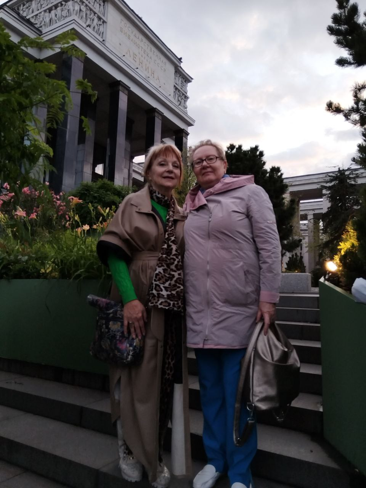
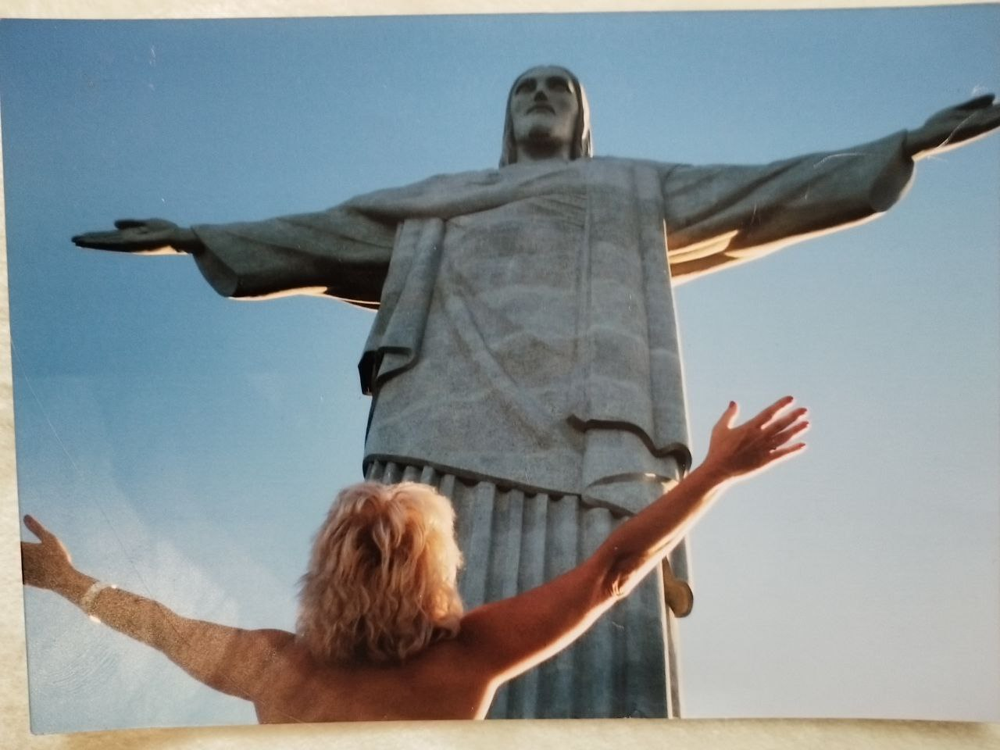
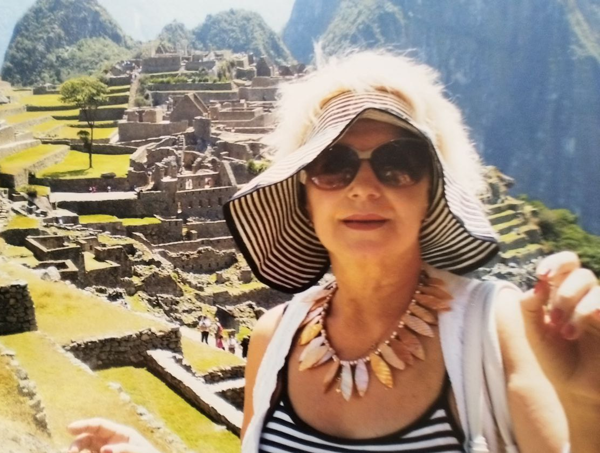
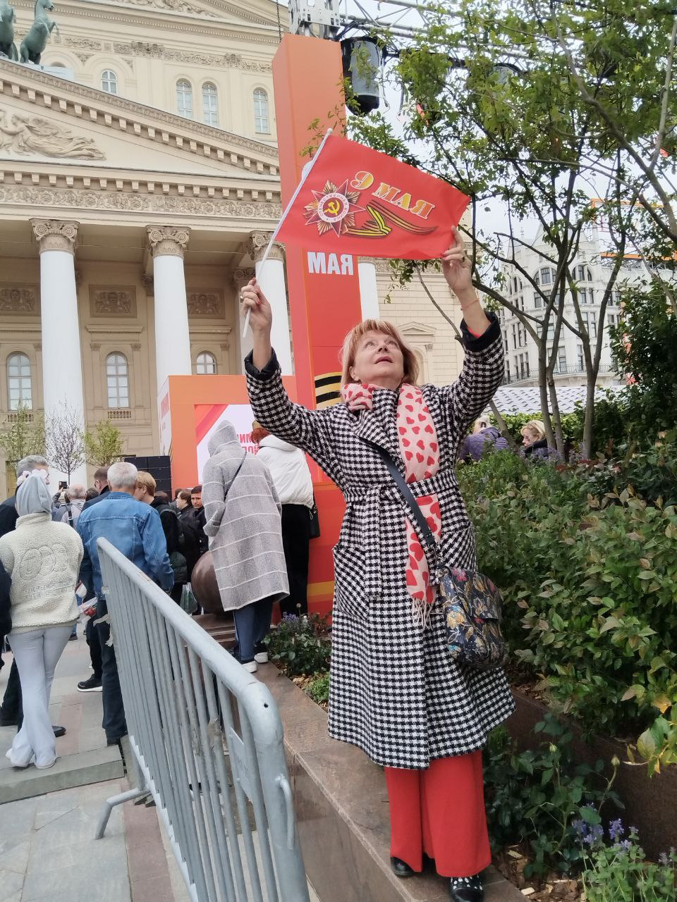
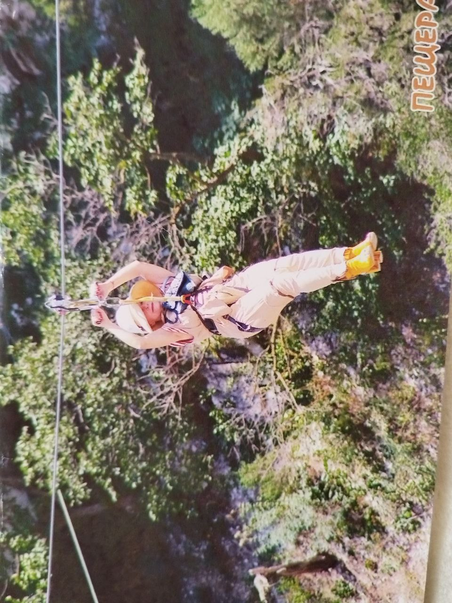

Папа прожил 11 лет, получив Божественный бонус в четыре года, и после любимой правнучки увидел взросление родившегося правнука. Я начала изучать «Древо Жизни». Посещала открытые встречи, прошла «Базовый курс», ступени и с 2009 года начала передавать знания «Древа Жизни» в качестве методиста. Наступил третий этап моего постижения «Древа Жизни», который не имеет завершения. Потому что это живая, развивающаяся система взаимопроникновения Человека и Мира.
Каждый человек, каждая группа слушателей, каждое событие личного или планетарного масштаба стали для меня пазлами единого процесса. Они словно переотражают друг друга, раскрывая свои смыслы в новых разделах учения: «Скрижали Света», «Новая Гиперборея», «Духовный Солидаризм». Взращивая своё Древо Жизни, приходит всё большее осознание ответственности за то, каким оно становится — как веточка на Древе Жизни Человечества.
На сегодня могу отметить несколько важнейших результатов: пришло переосмысление всех драматических событий личной жизни; стали понятны причины их зарождения и проявления; удалось укротить влияние страха перед приближающимся, неизбежным переходом обожаемых родителей, который подспудно жил во мне. И когда в течение одного года вслед за папой перешла мама, я не впала в депрессию и отчаяние. В душе оживало всё то, что я читала, осмысливала, передавала слушателям на занятиях, слышала на занятиях Аркадия Наумовича.
А в самый трагический для меня момент, когда он произнёс непривычно строгим, не оставляющим шанса для «сентиментально-депрессивного манёвра» голосом: «Но ты‑то знаешь, что смерти нет!», я физически почувствовала и осознала смысл фразы «Знание — сила».
Осмысление всего пережитого сформировало во мне следующую позицию: всеми своими чувствами, опытом, знаниями и отношением стремиться к тому, чтобы каждый, кто приходит к нам в Центр на занятия, выходил из-под давления страха и отчаяния; принимал душой знания Учения; овладевал его технологиями; наполнялся внутренним светом; преумножал веру в себя и вдохновенно, с радостью творил свою счастливую жизнь и прекрасное здоровье.
Сегодня для этого есть все условия — как во Вселенной, так и на Земле, где создана и развивается Аркадием Петровым живая система знаний «Древо Жизни».